相关说明：
横坐标含义为，1代表小米1,
1.5代表小米1S ，
2代表小米2,
2.5代表小米2S，
3代表
小米3,
4代表小米4。
纵坐标单位为G。
| 选择想了解的参数: | RAM | ROM | 屏幕尺寸 | PPI | 主摄像头像素 | CPU核心数 | 价格 |
小米手机配置变化过程：
| RAM | ROM | 屏幕尺寸 | PPI | 主摄像头 | CPU核心数 | 发布时间 | |
| 小米1 | 1 | 4 | 4 | 245 | 800 | 2 | 2011.10 |
| 小米1S | 1 | 4 | 4 | 245 | 800 | 2 | 2012.08 |
| 小米2 | 2 | 16 | 4.3 | 342 | 800 | 4 | 2012.10 |
| 小米2S | 2 | 32 | 4.3 | 342 | 1300 | 4 | 2013.04 |
| 小米3 | 2 | 64 | 5 | 441 | 1300 | 4 | 2013.09 |
| 小米4 | 3 | 64 | 5 | 441 | 1300 | 4 | 2014.07 |
| 手机型号 | 1 | 1s | 2 | 2s | 3 | 4 |
| 发布时间 | 2011.10 | 2012.08 | 2012.10 | 2013.04 | 2013.09 | 2014.07 |
| RAM | 1 | 1 | 2 | 2 | 2 | 3 |
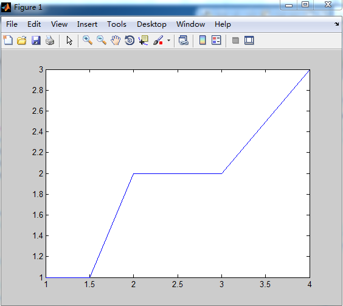
多项式拟合曲线如下:
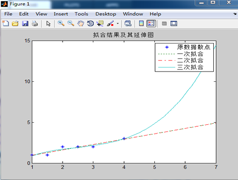
观察拟合曲线，可以看到未来的短时期内的变化趋势：由图可以看出来，到小米5时，RAM应该增加到4G。
结论：每一代手机RAM都有增加，同一代的升级版本一般不增加RAM。而每次新的一代产品出现时，内存RAM一般都有增加，趋势为大约每两年增加一倍。
考虑到内存的增大导致进一步增大时所需的成本会逐渐增加，同时内存的增长趋于饱和，因此，以后内存的增加速度应该会有所减慢。
matlab数据处理结果如下：
折线图：
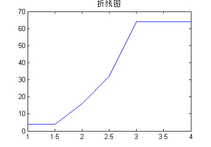
拟合曲线如下：
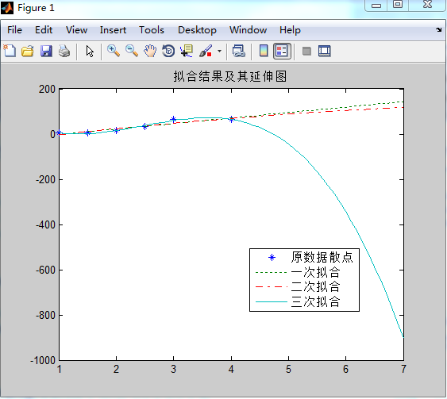
结论：观察拟合曲线，可以看出，二次拟合比较合理，因此选择二次拟合的结果作为预测参考。可以看到，以后手机的ROM仍然会增加，然后，不可能无限增加，到达一定程度后，会有趋于饱和的可能。
matlab数据处理结果如下：
折线图：
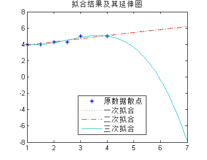
拟合曲线如下：
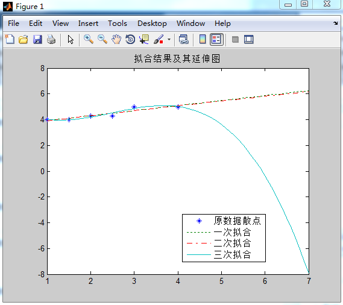
结论：
因为屏幕尺寸不会是一个一直增长的参数，屏幕尺寸的大小与用户的喜好有关，根据其变化趋势，可以看出，在屏幕还比较小的时候，屏幕的增大是平稳的，当到达5英寸时，屏幕尺寸趋于稳定，不再增长，这样用户体验有关，因此屏幕大小会停留在5点几，最多达到6点几英寸。
matlab数据处理结果如下：
折线图：
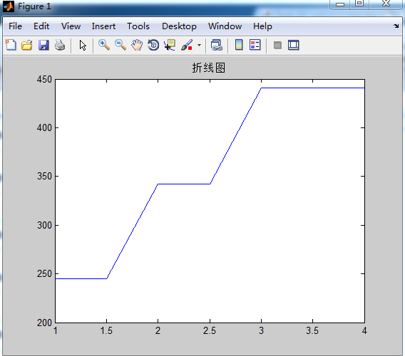
拟合曲线如下：
结论：
有拟合曲线图可以看出，二次拟合比较合理，因此，在未来的几代小米手机中，手机的屏幕PPI还会继续在增长——停顿——增长中交替进行，直到PPI达到某一很高的程度，不再需要进一步增加时，变趋于稳定。
matlab数据处理结果如下：
折线图：
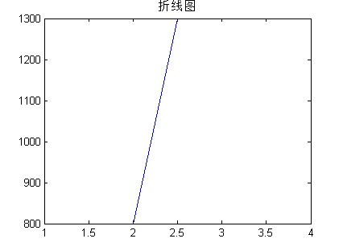
拟合曲线如下：
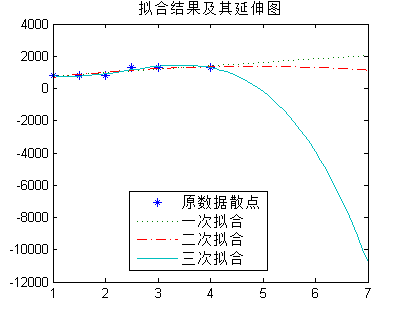
结论：
摄像头像素的增长有其自身的特点，是阶梯形状往上爬升的，可以看出来，摄像头的像素总是每隔几代便跳到一个更高的等级。可以预见，在短期的未来几年，还将保持这个这个趋势。
matlab数据处理结果如下：
折线图：
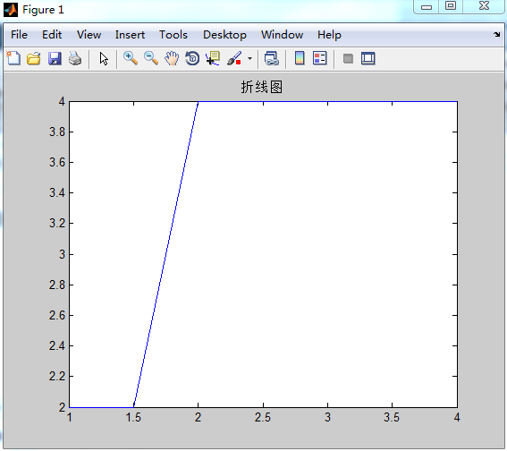
拟合曲线如下：
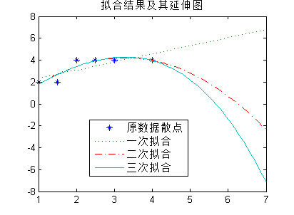
结论：
可以看到，手机CPU核心数的增长方式和摄像头像素的增长方式相似，都是呈阶梯状增长的，每一次跳跃性增长后会保持一个值数年。然后接着跳跃性增长（翻一番）。
综述：
小米手机大多数配置都在不断升级中，而升级的规律却不尽相同，同时，每种配置的升级的过程都有先快后慢的规律，有的升级到一定程度后升级速度变慢，有的甚至停止增长。